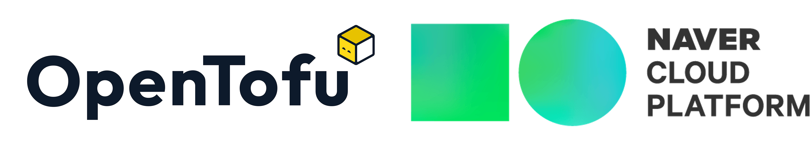

10 OpenTofu best practices
for NCloud

Wojciech Barczynski | VPE | Spacelift
NCloud
- Hyperscaller for AI
and cloud services; - Powers 65k companies;
- Samsung, SK Telecom, PUBS...;
- 6 regions;
- 300$ for the start!
- Founding partner of OpenTofu,
- Top contributor to the project,
- TF/OpenTofu automation and collaboration tool,
- Infrastructure orchestrator.
5/10: Pin versions
- Providers – minimum version
- Modules & version for OpenTofu/Terraform - exact for 3rd party
7/10: Running from your laptop

- Uff, luckily it was my test env
- ...
- ...
- üö®
8/10: Democratization
- Start with common conventions... later tools/modules/reusable XYZ